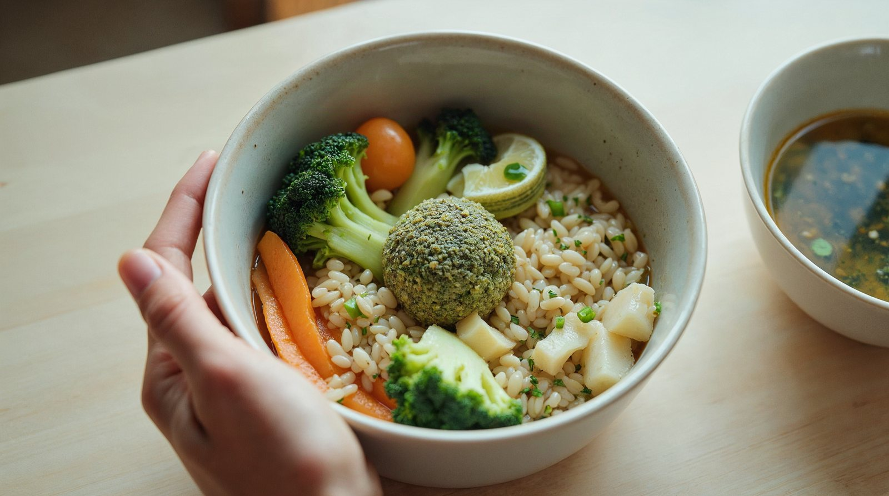
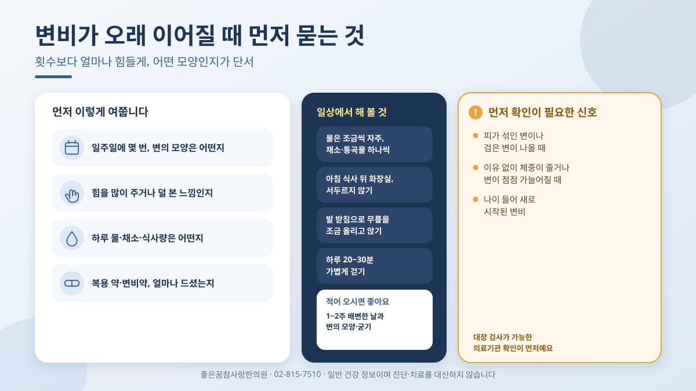

이종호 한의사 감수좋은꿈참사랑한의원 대표원장 (한의사 면허번호 19769)발행 2026-11-26 · 수정 2026-11-26
이 글의 차례
아침 일곱 시 반, 아이 등원 가방을 챙기는데 신호가 옵니다. 지금은 안 된다며 넘기고, 아이를 보내고 돌아와 앉아 보면 이미 소식이 없습니다. 이렇게 오래 이어지는 변비는 장 하나의 문제라기보다 하루의 리듬이 함께 엉킨 경우가 많습니다.
그래서 저는 몇 번 보시는지보다 변이 얼마나 단단한지, 얼마나 힘을 주셔야 하는지, 보고 나서 시원한지를 먼저 여쭙습니다. 그리고 식사 시간과 물, 걷기, 화장실 습관, 잠을 함께 살피며 모든 분께 맥을 짚습니다.
다만 피가 섞인 변, 원하지 않는 체중 감소, 50세 이후 새로 생긴 변비라면 생활을 바꿔 보기 전에 내과와 대장 검사가 먼저입니다. 갑자기 배가 부풀어 오르고 방귀도 나오지 않으면서 토한다면, 한의원 진료를 기다리지 말고 가까운 응급실로 가세요.
변비는 남에게 꺼내기 애매한 불편입니다. 큰 병은 아닌 것 같은데 하루 종일 배가 무겁고, 입맛이 떨어지고, 화장실에 오래 앉아 있다 나오면 기운까지 빠집니다. 사흘, 나흘이 지나면 바지 허리마저 답답해지지요.
원래 이런 체질이라며 웃으며 말씀하시는 분일수록, 그 웃음 뒤에 꽤 긴 시간이 있다는 것을 압니다. 잘 먹고, 잘 소화하고, 잘 배설하는 일은 너무 당연해서 잃어버리기 전에는 소중한 줄 모릅니다. 그 당연한 일 하나가 오래 어긋나 있었다면, 이제 그 사정을 차근차근 들어 볼 때입니다.
왜 변비는 한번 자리 잡으면 오래 갈까요
변비가 오래가는 데에는 대개 이유가 하나가 아닙니다. 끼니, 물, 움직임, 화장실 습관, 잠이 조금씩 어긋난 채로 몇 해를 지내 오신 경우가 많지요. 하나씩 풀어 보겠습니다.
장에도 시계가 있습니다
장은 하루 가운데 크게 움직이는 때가 있습니다. 자고 일어나 몸을 일으키고 아침을 먹고 나면, 장이 한 번 크게 밀어내는 움직임이 생기기 쉽습니다. 이때 오는 신호를 알아차리는 것이 오래된 변비를 살필 때 첫 단추가 됩니다.
그런데 아침을 거르거나 끼니 시간이 날마다 다르면 이 신호가 생길 자리부터 줄어듭니다. 바쁜 아침에 신호를 자꾸 넘기면 장도 점점 덜 보내게 되지요. 등원 준비와 출근 준비가 겹치는 집이라면 더 그렇습니다.
물 없이 늘린 식이섬유
채소와 통곡물에 든 식이섬유는 변의 부피를 키우고 물을 머금게 돕습니다. 그런데 물은 적게 마시면서 식이섬유만 갑자기 늘리면, 오히려 배가 빵빵해지고 변이 더 뻑뻑해지기도 합니다. 식이섬유와 물을 짝으로 늘려야 하는 까닭입니다.
커피와 차만 드시고 물은 거의 안 드시는 분이 생각보다 많습니다. 겨울에는 갈증을 덜 느껴 물이 더 줄어듭니다. 하루에 물을 몇 잔 드시느냐고 여쭤보면, 잠시 생각하시다가 웃으시는 분이 많습니다.
앉아 지내는 하루, 움츠러드는 겨울
하루 대부분 앉아 지내면 장의 움직임도 더뎌지기 쉽습니다. 날이 추워지면 바깥 걸음이 줄고 몸을 웅크린 채 지내게 되어, 겨울 들어 변비가 심해졌다는 분이 늘어납니다. 하루에 몇 분이나 걸으시는지 여쭙는 것도 그래서입니다.
겨울 간식으로 곶감이나 홍시를 자주 드신다면 겨울에 귤·홍시·곶감을 간식처럼 자주 먹은 뒤 속이 쓰리거나 변이 굳고 배에 가스가 찰 때는 어떻게 살피나요?도 함께 읽어 보세요.
잠, 긴장, 그리고 배의 온기
잠이 부족하고 긴장이 쌓이면 장의 리듬도 함께 흔들립니다. 늦게 자고 늦게 일어나면 아침 식사와 화장실 시간이 통째로 밀려나지요. 손발이 차고 배가 늘 서늘한 분, 기운이 없어 움직임이 줄어든 분도 변비를 함께 이야기하시곤 합니다.
한의학에서는 같은 변비라도 밀어내는 힘이 모자란 쪽인지, 긴장으로 막힌 쪽인지, 몸에 열이 쌓여 변이 마른 쪽인지, 배가 차서 움직임이 더딘 쪽인지를 나누어 살핍니다. 같은 음식이나 같은 방법이 모든 분께 맞지 않는 이유이기도 합니다.
시험이나 마감처럼 긴장이 큰 시기에 변이 더 막히는 분이라면 시험 스트레스로 변비나 속 쓰림이 올 때는 무엇을 살피나요?에 정리한 내용도 참고가 될 것입니다.
약과 몸 전체의 사정
철분제, 일부 진통제, 일부 혈압약처럼 변비를 함께 남기는 약이 있습니다. 새로 먹기 시작한 약이 있다면 변비가 시작된 무렵과 겹치는지 살펴봅니다.
추위를 유난히 타고 붓기와 피로, 변비가 몇 주째 함께 이어진다면 갑상선처럼 다른 원인이 없는지 내과에서 혈액 검사로 먼저 확인해 보시길 권합니다. 변비가 몸 전체의 사정을 알려 주는 신호일 때도 있기 때문입니다.
변비약을 오래 드셔 온 분께
변비약을 오래 드신 분들은 두 마음 사이를 오갑니다. 계속 먹으면 장이 게을러진다는 말이 걱정되고, 막상 안 먹으면 며칠씩 소식이 없으니 불안하지요. 예전만 못하다고 느껴 스스로 양을 늘려 오신 분도 계십니다.
변비약은 종류가 여럿이고 작용하는 방식도 서로 다릅니다. 어떤 약을 얼마나 이어 갈지는 처방한 의사나 약사와 상의해 정하시고, 임의로 끊거나 늘리지 않으셨으면 합니다. 약국에서 직접 사 드신 약도 약사와 먼저 상의해 주세요.
한의원에서는 드시는 약의 이름과 기간, 드시는 방법을 먼저 여쭙고, 그 약은 그대로 둔 채 생활 리듬과 몸 상태를 함께 살핍니다. 약을 줄이는 이야기는 생활이 어느 정도 자리를 잡은 뒤, 처방한 분과 상의하실 일입니다.
예를 들면 이런 경우입니다
예를 들어 아이 등원 준비로 아침마다 신호를 넘기는 경우라면, 아이보다 15분 먼저 일어나 따뜻한 물 한 잔과 간단한 아침을 먼저 드시도록 권합니다. 그 뒤 10분은 화장실에 앉아 보는 시간으로 비워 두고, 그 시간만큼은 집안일에서 빼 두기로 함께 정합니다.
예를 들어 겨울 들어 사무실 밖으로 거의 나가지 않고 물 대신 커피만 마시다 변이 단단해진 경우라면, 책상 위에 물병을 두고 커피 한 잔마다 물 한 잔을 곁들이는 것부터 시작합니다. 점심 뒤 10분 걷기를 더하고, 2주 동안 배변 기록을 이어 갑니다.
예를 들어 활동이 줄고 여러 약을 드시는 어르신이 식사량까지 줄어든 경우라면, 약봉지부터 함께 봅니다. 하루 물과 식사량을 여쭙고, 변비가 최근에 새로 생긴 것이라면 대장 검사를 먼저 받으셨는지 확인합니다.
스스로 점검해 보세요
- 일주일에 세 번보다 적게 보는 날이 몇 주째 이어진다
- 변이 토끼 똥처럼 작고 딱딱하게 나온다
- 화장실에서 오래 힘을 줘야 하는 날이 많다
- 보고 나서도 덜 본 느낌이 남는다
- 물은 하루 네 잔이 안 되고, 마시는 것은 대부분 커피나 차다
- 하루 대부분 앉아서 지내고 걷는 시간이 30분이 안 된다
- 변비약 없이는 며칠씩 소식이 없다
세 가지 넘게 해당한다면 생활에서 먼저 손볼 곳을 함께 찾아보면 좋겠습니다. 표시한 목록을 그대로 가져오셔도 됩니다. 다만 아래 '이런 증상은 먼저 확인이 필요합니다'의 신호가 있다면 그쪽이 먼저입니다.
먼저 이렇게 여쭙니다
- 변비가 언제부터였나요? 원래 그랬는지, 어느 무렵부터 달라졌는지요.
- 일주일에 몇 번 보고, 변의 굳기와 굵기는 어떤가요?
- 힘을 많이 줘야 하거나, 보고 나서도 남은 느낌이 있나요?
- 끼니 시간과 물·커피 양, 하루 걷는 시간은 어떤가요?
- 잠은 몇 시에 드시나요? 손발이나 배가 차지는 않나요?
- 변비약과 다른 약을 얼마나, 어떻게 드시나요?
원래 그랬는지, 어느 무렵부터 달라졌는지를 꼭 여쭙는 데에는 이유가 있습니다. 젊을 때부터 이어진 변비와 몇 달 사이 새로 생긴 변비는 살필 방향이 다릅니다. 50세 이후 새로 생겼거나 변이 점점 가늘어진다면 대장 검사를 먼저 권합니다.

일상에서 먼저 해 볼 수 있는 것
- 끼니 시간을 날마다 비슷하게 맞추고, 아침은 적게라도 먹기
- 일어나서 미지근한 물 한 잔, 낮에는 커피 한 잔마다 물 한 잔 곁들이기
- 아침 식사 뒤 10분은 화장실에 앉아 보는 시간으로 비워 두기
- 하루 20~30분 걷고, 오래 앉아 있을 때는 한 시간마다 일어나기
- 채소·해조류·통곡물은 한 가지씩, 물과 함께 천천히 늘리기
- 잠드는 시각보다 일어나는 시각을 먼저 일정하게 맞추기
화장실에서는 이렇게
화장실에서는 발 받침에 발을 올려 무릎을 엉덩이보다 조금 높여 보세요. 몸을 살짝 앞으로 기울인 자세가 힘을 덜 주는 데 도움이 될 수 있습니다. 휴대폰은 두고 들어가 5~10분 안쪽으로 앉아 있다가, 소식이 없으면 일어나 다음 신호를 기다리시면 됩니다.
세게, 오래 힘주는 습관은 항문 주변에도 부담을 줍니다. 신호가 올 때는 미루지 않고, 신호가 없을 때는 억지로 버티지 않는 것. 이 두 가지부터 지켜 보세요.
목표는 낮게, 꾸준하게
하루아침에 습관 여섯 가지를 다 바꾸려 하면 사흘을 넘기기 어렵습니다. 아침 물 한 잔이나 점심 뒤 10분 걷기처럼 해낼 수 있는 것 하나부터 정하세요. 사람은 생각보다 쉽게 낙담하니, 못 지킨 날은 탓하지 말고 다음 날 다시 하시면 됩니다.
심장이나 신장 질환으로 마시는 물의 양을 조절하고 계시다면, 물을 늘리기 전에 담당 의사와 먼저 상의해 주세요. 운전처럼 화장실을 마음대로 가기 어려운 일을 하신다면 버스·택시 기사가 화장실 때문에 물을 참다가 변비가 생길 때는 어떻게 살피나요?도 도움이 됩니다.
2주쯤 꾸준히 지켜 본 뒤에도 변이 단단하고 힘든 날이 이어지거나 변비약 없이 지내기 어렵다면, 그때는 혼자 애쓰지 말고 상담을 받아 보시길 권합니다.
한의원에서 함께 살필 수 있는 경우
- 생활을 바꿔 보았는데도 변이 단단하고 힘들게 보는 날이 몇 주째 이어지는 경우
- 변비와 함께 배가 더부룩하고 입맛과 잠까지 흔들리는 경우
- 손발과 배가 차고 기운이 없어 움직임이 줄어든 경우
- 긴장하면 변이 더 막히거나, 변비와 설사가 번갈아 오는 경우
처음 오시면 변비가 시작된 무렵과 하루를 어떻게 보내시는지부터 듣습니다. 이때 피가 섞인 변, 체중 감소, 가늘어진 변 같은 경고 신호가 없는지 먼저 확인하고, 그런 신호가 있으면 대장 검사가 가능한 의료기관을 먼저 안내합니다.
그다음 모든 분께 양손의 맥을 짚습니다. "모든 치료의 시작과 끝에 진맥이 있어야 한다." 제가 오래 지켜 온 원칙입니다. 맥으로는 밀어내는 힘이 모자란 쪽인지, 긴장이나 열이 쌓인 쪽인지 같은 몸 전체의 사정을 가늠해 봅니다.
같은 변비라도 손발이 따뜻한 분과 찬 분은 살피는 방향이 다릅니다. 그래서 필요하다고 판단될 때 혀를 보고, 누운 자세에서 배를 직접 만져 보는 복진을 합니다. 배가 단단하게 긴장해 있는지, 아랫배가 찬지, 눌렀을 때 불편한 자리가 있는지 살핍니다.
이야기와 진찰을 모아 침이나 한약 상담 가운데 맞는 방향과, 이번 주에 바꿔 볼 생활 한두 가지를 함께 정합니다. 드시던 변비약은 임의로 끊지 않도록 말씀드리고, 조절이 필요해 보이면 처방한 분과 상의하시도록 안내합니다.
다시 오시면 맥을 다시 짚고, 지난번 이후 배변 기록이 어떻게 달라졌는지부터 이어서 여쭙니다. 지키기 어려웠던 사정까지 들어야 다음 계획을 무리 없이 세울 수 있습니다. 평일은 저녁 8시까지, 토·일·공휴일은 오후 3시까지 진료합니다.
이렇게 기록해 오시면 상담이 쉬워집니다
- 1~2주 동안 배변한 날과 변의 굳기
- 힘을 준 정도와 보고 난 뒤 시원했는지
- 하루 물·커피 양, 걸은 시간, 잠든 시각
- 변비약과 다른 약, 영양제의 이름과 드신 기간
- 받으신 대장내시경이나 건강검진 결과
변의 굳기는 말로 설명하기 어려워하시는 분이 많습니다. 토끼 똥처럼 동글동글한지, 소시지 모양인데 겉이 갈라졌는지, 매끈한지, 무른지 정도로만 적어 오셔도 충분합니다.
기록을 펼쳐 놓고 가장 편했던 날과 가장 힘들었던 날을 나란히 보면, 그사이 무엇이 달랐는지 보이곤 합니다. 그 차이가 다음 이야기의 출발점이 됩니다.
이런 증상은 먼저 확인이 필요합니다
- 피가 섞인 변이나 검은 변을 보는 경우
- 원하지 않았는데 체중이 줄어드는 경우
- 스스로를 해칠 생각이 들면 ☎ 109로 바로 연락하세요.
이런 신호가 있으면 한의원보다 가까운 병원이나 응급실을 먼저 찾으세요.
변비는 하루아침에 생기지 않았듯, 하루아침에 달라지기를 바라기도 어렵습니다. 그래도 아침 10분, 물 한 잔, 걷기 20분처럼 작은 것 하나는 오늘부터 해 볼 수 있습니다. 다음에 오시면 지난 두 주 동안 가장 편하게 보셨던 날이 언제였는지, 그날 무엇이 달랐는지부터 여쭙겠습니다.

여쭙는 것
- 변비가 언제부터였나요? 원래 그랬는지, 어느 무렵부터 달라졌는지요.
- 일주일에 몇 번 보고, 변의 굳기와 굵기는 어떤가요?
- 힘을 많이 줘야 하거나, 보고 나서도 남은 느낌이 있나요?
생활에서 해 볼 것
- 끼니 시간을 날마다 비슷하게 맞추고, 아침은 적게라도 먹기
- 일어나서 미지근한 물 한 잔, 낮에는 커피 한 잔마다 물 한 잔 곁들이기
- 아침 식사 뒤 10분은 화장실에 앉아 보는 시간으로 비워 두기
한의원에서 함께 살필 것
- 생활을 바꿔 보았는데도 변이 단단하고 힘들게 보는 날이 몇 주째 이어지는 경우
- 변비와 함께 배가 더부룩하고 입맛과 잠까지 흔들리는 경우
- 손발과 배가 차고 기운이 없어 움직임이 줄어든 경우
먼저 확인이 필요한 신호
- 피가 섞인 변이나 검은 변을 보는 경우
- 원하지 않았는데 체중이 줄어드는 경우
- 스스로를 해칠 생각이 들면 109로 바로 연락하세요.
한눈에 보는 표
| 구분 | 핵심 |
|---|---|
| 여쭙는 것 | 변비가 언제부터였나요? 원래 그랬는지, 어느 무렵부터 달라졌는지요. 일주일에 몇 번 보고, 변의 굳기와 굵기는 어떤가요? |
| 생활에서 해 볼 것 | 끼니 시간을 날마다 비슷하게 맞추고, 아침은 적게라도 먹기 일어나서 미지근한 물 한 잔, 낮에는 커피 한 잔마다 물 한 잔 곁들이기 |
| 한의원에서 함께 살필 것 | 생활을 바꿔 보았는데도 변이 단단하고 힘들게 보는 날이 몇 주째 이어지는 경우 변비와 함께 배가 더부룩하고 입맛과 잠까지 흔들리는 경우 |
| 먼저 확인이 필요한 신호 | 피가 섞인 변이나 검은 변을 보는 경우 원하지 않았는데 체중이 줄어드는 경우 |
자주 묻는 질문
변비약을 오래 먹어도 괜찮을까요?
약의 종류와 드신 기간에 따라 다릅니다. 처방한 의사나 약사와 상의해 정하시고 임의로 끊거나 늘리지 마세요. 진료 때 약 이름을 알려 주시면 생활 리듬과 함께 살핍니다.
며칠에 한 번 보면 변비인가요?
횟수만으로 정하지 않습니다. 변이 단단한지, 힘을 많이 줘야 하는지, 보고 나서 시원한지를 함께 봅니다.
식이섬유를 늘렸더니 배가 더 빵빵해요.
갑자기 많이 늘리면 가스가 차기 쉽습니다. 한 가지씩 조금씩 늘리고 물을 함께 드셔 보세요. 그래도 불편하면 드신 음식을 적어 진료 때 알려 주세요.
물은 얼마나 마시면 되나요?
한 번에 많이 마시기보다 하루 동안 나누어 자주 드시는 편이 좋습니다. 심장이나 신장 질환으로 물 양을 조절하고 계시다면 담당 의사와 먼저 상의하세요.
좋은꿈참사랑한의원은 재진 때 지난번 이야기부터 이어서 여쭙니다. 진료시간과 예약은 오시는 길에서 확인하세요.
어디서 상담받을 수 있나요?
좋은꿈참사랑한의원은 서울 동작구 만양로2길 2 신성빌딩 3층·5층(서울 동작구 상도동, 7호선 상도역 3번 출구 근처)에 있습니다. 한의사 3명(이종호 대표원장, 조영기 수석진료원장, 정원영 진료원장)이 진료합니다. 진료시간은 평일 09:30~20:00(점심 13:00~14:00), 토·일·공휴일 09:30~15:00이며, 방문 전 전화로 확인을 권합니다. 예약은 네이버 예약, 카카오톡 상담, 전화 02-815-7510로 받습니다.
이 글은 일반적인 건강 정보이며 개인의 진단이나 치료를 대신하지 않습니다. 증상이 있거나 복용 중인 약이 있다면 진료를 통해 확인하세요. 치료 효과는 개인마다 다를 수 있습니다.
작성 기준: 일반적으로 알려져 있는 건강 정보를 참고해 정리했습니다(대표원장 감수). 증상 기록은 1~2주 동안 하루 1회, 비슷한 시간에 적어 오시면 지난 상태와 비교하기 쉽습니다.